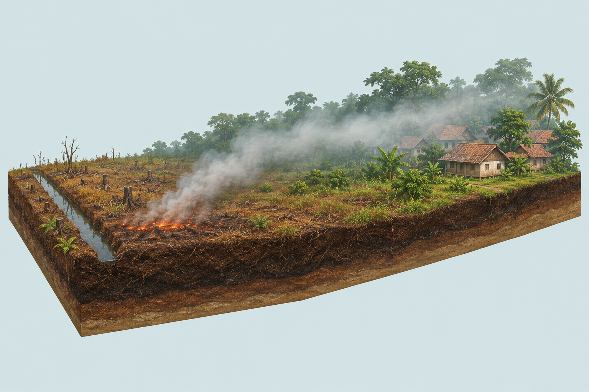

From peat to lungs
Every dry season, drained peat in Sumatra and Borneo smoulders for weeks. We followed the smoke from the burning ground to the people who breathe it, across 305 districts in Riau and Central Kalimantan.

How it works
How a peat fire becomes a health risk
The seven steps this analysis follows, in order.
Fire seasons
The fire moved provinces
Fire detections per month
20192026
Source: NASA FIRMS VIIRS S-NPP, detections inside each province. August–October 2026 is near-real-time data.
How much fire surrounds each place
Height and colour = density of fire detections within 100 km, July–October. Same scale in both years.
Source: NASA FIRMS VIIRS S-NPP; province outlines GADM 4.1, Natural Earth. Quartic kernel, shown in 8 km blocks.
Land type
Fire clusters on cleared peat
A descriptive comparison, not proof of cause. Categories overlap: peat can also be forest.
Fire detections per 100 km², by land type
Source: NASA FIRMS; Global Forest Watch peat; Hansen GFC v1.12 forest loss; MapBiomas Indonesia forest 2000.
From fire to air
More fire nearby, dirtier air
Nearby fire vs PM₂.₅, September 2019
RiauCentral KalimantanLine: 2019 model · one dot per district
Source: WashU ACAG V6.GL.03 PM₂.₅, weighted by WorldPop 2020 population; NASA FIRMS.
How to read the tests
Calculate Field LN_KDE = Ln(1 + KDE_MEAN) → Ordinary Least Squares PM25_pw ~ LN_KDE → Spatial Autocorrelation (Global Moran's I) on the residuals, K nearest neighbors = 8. Expect R² ≈ 0.55 and residual Moran's I ≈ 0.61.Map
Preparedness
Who to prepare first
Priority zones are 2 km cells where fire, smoke and people overlap most (index at least 1.5 standard deviations above average).
Index sensitivity test
Raster Calculator: z(x) = (x − mean) / std using Get Raster Properties. Index = 0.3·z(KDE) + 0.3·z(Ln(1 + people/km²)) + 0.4·z(PM₂.₅), then re-standardise. Con(index ≥ 1.5) → Raster to Polygon (no simplify) → Zonal Statistics as Table SUM of population.Residents in priority zones
| Regency / city | Residents | Share |
|---|
Source: WorldPop 2020 (used for both seasons); author's analysis.
Groups of similar districts
Limits
What this cannot tell you
Wind is not modelled
The kernel spreads fire evenly in every direction. Model errors cluster in space (Moran's I 0.61), a sign that smoke direction matters.
2026 is an estimate
2020 population for both seasons
WorldPop 2020 stands in for both seasons, so migration is not reflected.
Priority is relative
The index is standardised within each season. Compare places within a season, not the size of risk across years.
Advanced mode shows how to reproduce this analysis in ArcGIS Pro, step by step.
How to reproduce this in ArcGIS Pro
Each step names the tool and its parameters. Check numbers are the results your run should roughly match.
Rizaldy Utomo · GIS project, Carnegie Mellon University, 2026
Data: NASA FIRMS VIIRS S-NPP, BPS/OCHA HDX boundaries, Global Forest Watch peat, Hansen v1.12 forest loss, MapBiomas Indonesia 2000, WorldPop 2020, WashU ACAG V6.GL.03 PM₂.₅ (Sept 2019), GADM 4.1, Natural Earth; Esri Light Gray Canvas basemap.
Opening illustration made with ImageGen. All models run from static data in your browser; no tracking.